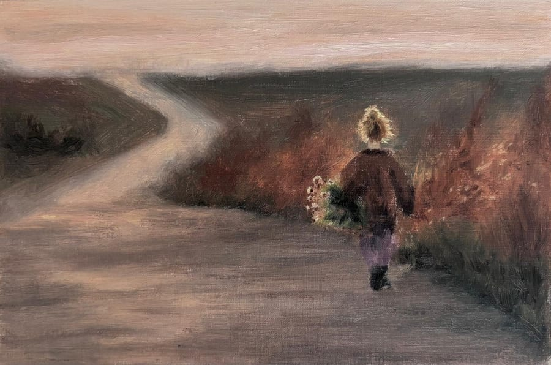
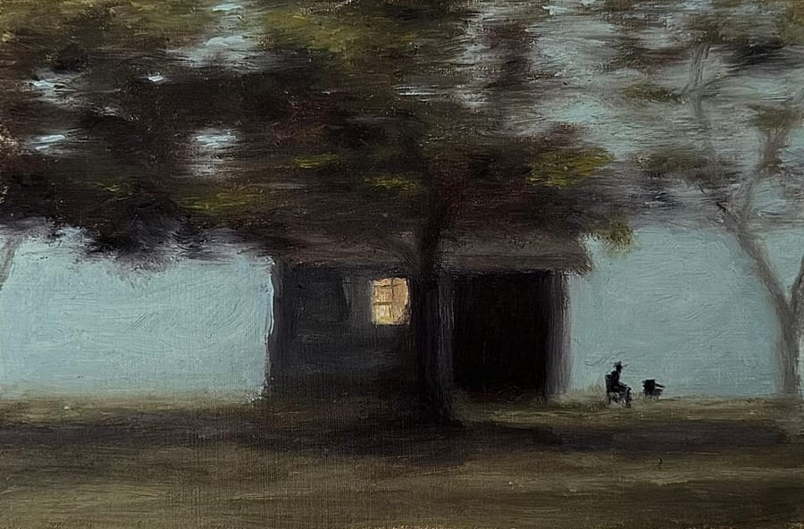
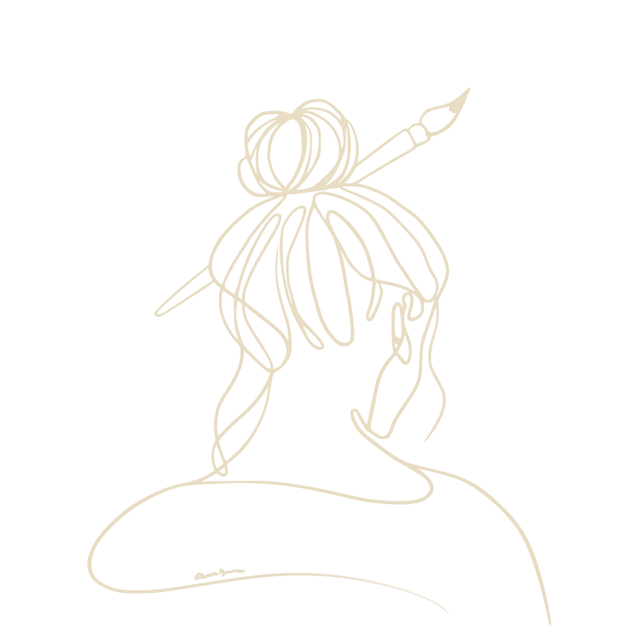

oil paintings
June 2026Oil on linen, 10 × 20 cm
May 2026Oil on linen, 8 × 16 cm

August 2026Oil on linen, 13 × 19 cm
August 2025Oil on linen, 10 × 15 cm

May 2026Oil on linen, 9 × 14 cm

scroll slowly